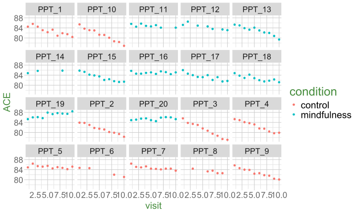
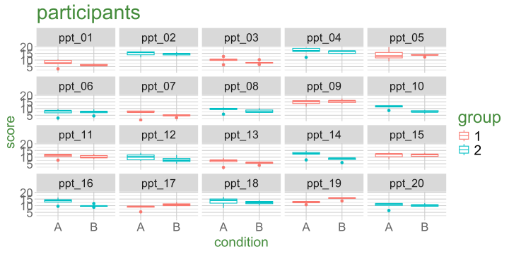
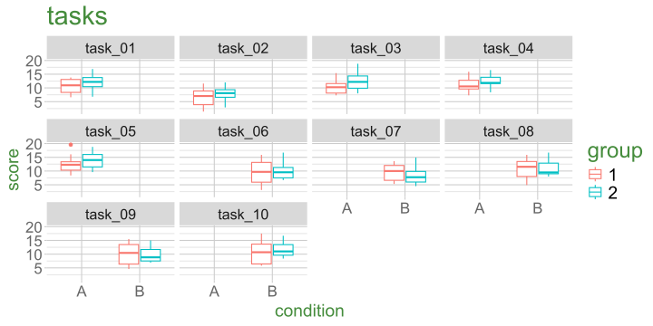

d3 <- read_csv("https://uoepsy.github.io/data/lmm_mindfuldecline.csv")Random Effect Structures & Model Building
Data Analysis for Psychology in R 3
Josiah King
Psychology, PPLS
University of Edinburgh
Course Overview
|
multilevel modelling working with group structured data |
regression refresher |
| the multilevel model | |
| more complex groupings | |
| centering, assumptions, and diagnostics | |
| recap | |
|
factor analysis working with multi-item measures |
measurement and dimensionality |
| exploring underlying constructs (EFA) | |
| testing theoretical models (CFA) | |
| reliability and validity | |
| recap & exam prep |
This week
- More complicated grouping structures
- multiple groupings, and groupings of groupings
- Model Building - how to simplify random effect structures for models that don’t converge
Random Effect Structures
Grouping structures so far…
children within schools
people within areas
trials within participants
timepoint within participants
nurses within hospitals
and probably some others…
Nested Structures
The things in a cluster belong only to that cluster.
Nested Structures (2)
The things in a cluster belong only to that cluster.
Nested Structures (3)
The things in a cluster belong only to that cluster.
(1 | school) + (1 | class:school)or
(1 | school) + (1 | school:class)
Nested Structures (4) - Labels!
The things in a cluster belong only to that cluster.
Nested Structures (5) - Labels!
The things in a cluster belong only to that cluster.
(1 | school) + (1 | class:school)or
(1 | school) + (1 | school:class)or
(1 | school) + (1 | class) iff the labels of classes are unique!!
Nested Structures (6) - Shorthand (discouraged)
(1 | school/class)
is shorthand for
(1 | school) + (1 | class:school)
shorthand only works when random slopes are same at each level
this can’t be compressed to use school/class:
(1 + x + z | school) + (1 + z | class:school)
Example 1 (just two levels)
One study site recruits 20 participants.
Each participant has 10 datapoints.
sitename ppt condition visit age ACE imp
Sncbk PPT_1 control 1 60 84.5 unimp
Sncbk PPT_1 control 2 62 85.6 imp
Sncbk PPT_1 control 3 64 84.5 imp
Sncbk PPT_1 control 4 66 83.1 imp
... ... ... ... ... ... ...
Sncbk PPT_11 mindfulness 1 60 85.6 imp
Sncbk PPT_11 mindfulness 2 62 84.5 unimp
Sncbk PPT_11 mindfulness 3 64 85.7 imp
Sncbk PPT_11 mindfulness 4 66 84.8 unimpExample 2 (another level, nested)
14 study sites each recruit c20 participants.
Each participant has 10 datapoints.
sitename ppt condition visit age ACE imp
Savdz PPT_1 control 1 60 84.8 imp
Savdz PPT_1 control 2 62 85 imp
Savdz PPT_1 control 3 64 83.9 imp
Savdz PPT_1 control 4 66 83 imp
Savdz PPT_1 control 5 68 82.2 imp
Savdz PPT_1 control 6 70 81.9 imp
... ... ... ... ... ... ...
... ... ... ... ... ... ...
Slonb PPT_8 control 9 76 82.1 imp
Slonb PPT_8 control 10 78 81.6 imp
Slonb PPT_9 mindfulness 1 60 85 imp
Slonb PPT_9 mindfulness 2 62 85.1 imp
... ... ... ... ... ... ...Crossed Structures
Things that are crossed == anything with multiple groups that are “not nested”
Crossed Structures (2)
Things that are crossed == anything with multiple groups that are “not nested”
Crossed Structures (3)
Things that are crossed == anything with multiple groups that are “not nested”
Crossed Structures (4)
Things that are crossed == anything with multiple groups that are “not nested”
(1 | subject) + (1 | task)
Example 3 (crossed)
Participants take part in an experiment where they each complete the same 10 tasks.
ppt task score
ppt_01 task_01 7.4
ppt_01 task_02 3.4
... ... ...
ppt_01 task_06 5.3
ppt_01 task_07 6.7
... ... ...
... ... ...
ppt_02 task_01 16.2
ppt_02 task_02 12
... ... ...
ppt_02 task_06 13.8
ppt_02 task_07 14.9
... ... ...
... ... ...
ppt_11 task_01 12.2
ppt_11 task_02 7.7
... ... ...
ppt_11 task_06 9.8
ppt_11 task_07 11.2
... ... ...Example 3 (crossed)
Participants take part in an experiment where they each complete the same 10 tasks.
ppt task score
ppt_01 task_01 7.4
ppt_01 task_02 3.4
... ... ...
ppt_01 task_06 5.3
ppt_01 task_07 6.7
... ... ...
... ... ...
ppt_02 task_01 16.2
ppt_02 task_02 12
... ... ...
ppt_02 task_06 13.8
ppt_02 task_07 14.9
... ... ...
... ... ...
ppt_11 task_01 12.2
ppt_11 task_02 7.7
... ... ...
ppt_11 task_06 9.8
ppt_11 task_07 11.2
... ... ...Example 3 (crossed)
Participants take part in an experiment where they each complete the same 10 tasks.
ppt task score
ppt_01 task_01 7.4
ppt_01 task_02 3.4
... ... ...
ppt_01 task_06 5.3
ppt_01 task_07 6.7
... ... ...
... ... ...
ppt_02 task_01 16.2
ppt_02 task_02 12
... ... ...
ppt_02 task_06 13.8
ppt_02 task_07 14.9
... ... ...
... ... ...
ppt_11 task_01 12.2
ppt_11 task_02 7.7
... ... ...
ppt_11 task_06 9.8
ppt_11 task_07 11.2
... ... ...“Random Effects”
\[ \text{... + }\underbrace{\text{(random intercept + random slopes | grouping structure)}}_{\text{random effects}} \]
People use different phrasings…
- when referring to random slopes:
- “random effects of x for/by g”
- “by-g random effects of/for x”
- “random effects of x for/by g”
- when referring to random intercept:
- “random effect for g”
- “by-g random intercepts”
common definition: “allow ___ to vary by g”
Random Effects Revisited (2)
Should variable g be fixed or random?
| Repetition: If the experiment were repeated: |
Desired inference: The conclusions refer to: |
|
|---|---|---|
| Fixed \(y\,\sim\,~\,...\, +\, g\) |
Same groups would be used | The groups used |
| Random \(y\,\sim\,...\,+\,(\,... |\,g)\) |
Different groups would be used | A population from which the groups used are just a (random) sample |
Random Effects Revisited (3)
I have y ~ 1 + x + (1 | g) should I include by-g random slope of x?
if x is a variable for which values differ between groups, then we can’t model the y~x slope varying between groups.
if x is a variable for which values differ within groups, then the y~x slope might vary from one group to another.
- including
(1 + x| g)gives better estimate of the uncertainty in the fixed effect ofx.- important to include especially if
xis the thing we’re interested in!
- important to include especially if
“Ultimately, the random effect structure one uses in an analysis encodes the assumptions that one makes about how sampling units [e.g. participants] vary, and the structure of dependency that this variation creates in one’s data.”
Example 1 (just two levels)

multiple observations from each participant
(1 | ppt)for a single ppt, the slope of
ACE ~ visitexists in our study design. This could (quite likely) be different for different ppts!
(visit | ppt)for a single ppt, the slope of
ACE ~ conditionis not observed in our study design (each ppt is either one condition or the other).
(condition | ppt)
Example 2 (another level, nested)
multiple observations from each participant:
(1 | sitename)multiple participants nested within study sites:
(1 | sitename) + (1 | ppt:sitename)for a single ppt, the slope of
ACE ~ visitexists in our study design:
(visit | ppt)for a single study site, the slope of
ACE ~ visitexists in our study design:
(visit | sitename)for a single ppt, the slope of
ACE ~ conditiondoes not exist in our study design:
(condition | ppt)for a single study site, the slope of
ACE ~ conditionexists in our study design:
(condition | sitename)
Example 3 (crossed)
Participants take part in an experiment where they each complete 10 tasks. Odd numbered participants are in Group 1, Even numbered participants in Group 2. Participants see tasks 1-5 in Condition A and tasks 6-10 in B.

multiple observations from each participants:
(1 | ppt)participants are observed in each condition - the effect of condition could be different for participant 1 vs participant 2
(condition | ppt)participants are observed in either group 1 or group 2. The effect of group is not defined for a single participant:
(group | ppt)
Example 3 (crossed)
Participants take part in an experiment where they each complete 10 tasks. Odd numbered participants are in Group 1, Even numbered participants in Group 2. Participants see tasks 1-5 in Condition A and tasks 6-10 in B.

multiple observations from each participants:
(1 | ppt)participants are observed in each condition - the effect of condition could be different for participant 1 vs participant 2
(condition | ppt)participants are observed in either group 1 or group 2. The effect of group is not defined for a single participant:
(group | ppt)multiple observations of each task (not nested within ppts):
(1 | task)
tasks are completed by people in each group - the effect of group could be different for task 1 vs task 2:
(group | task)tasks 1-5 are in Condition A, and 6-10 in Condition B. The effect of condition isn’t defined for any given task:
(condition | task)
Example 4 (crossed, but more complex!)
Participants take part in an experiment where they each complete 10 tasks. Odd numbered participants are in Group 1, Even numbered participants in Group 2. Participants 1-10 see tasks 1-5 in Condition A and tasks 6-10 in B, Participants 11-20 see tasks 1-5 in B and 6-10 in A.
multiple observations from each participants:
(1 | ppt)participants are observed in each condition - the effect of condition could be different for participant 1 vs participant 2
(condition | ppt)participants are observed in either group 1 or group 2. The effect of group is not defined for a single participant:
(group | ppt)multiple observations of each task (not nested within ppts):
(1 | task)
tasks are completed by people in each group - the effect of group could be different for task 1 vs task 2:
(group | task)tasks in each condition are completed by both groups. How group effects interact with condition effects could be different for task 1 vs 2:
(group * condition | task)
The poke in the eye
Sometimes a model is too complex to be supported by the data
Balancing act between simplifying our model while preserving attribution of variance to various sources
Convergence Warnings:
warning(s): Model failed to converge with max|grad| = 0.041777 (tol = 0.002, component 1) (and others)
Singular Fits:
message(s): boundary (singular) fit: see help('isSingular')
Model Building
underfitting and overfitting
Accurately representing the world
Aim: random effect structure that fully reflects our understanding of how things can vary, given the study design.
(trickier with observational data in which you could argue that everything will vary)
Practical issues with fitting models
in our sample, some things will not vary enough to fit x|g
- predictors on different scales
- e.g.
millimeters|gvskilometers|g- can be fixed with scaling
- can be fixed with scaling
- e.g.
- not enough groups in
g- fit
+ginstead of(1|g)
- fit
- not enough variance in
y~xbetween groups- model estimation can hit boundaries
- variance \(\nleqq 0\)
- correlation \(\ngeqq 1\) and \(\nleqq -1\))
- model estimation can hit boundaries
Maximal Structures
“maximal model” = the most complex random effect structure supported by the design
everything that can be modelled as a random effect is included
requires sufficient variance at all levels (for both intercepts and slopes where relevant). Which is often not the case.
14 Study sites, each with c18 ppts, each with approx 10 observations
Rows: 2677 Columns: 7
── Column specification ────────────────────────────────────────────────────────
Delimiter: ","
chr (4): sitename, ppt, condition, imp
dbl (3): visit, age, ACE
ℹ Use `spec()` to retrieve the full column specification for this data.
ℹ Specify the column types or set `show_col_types = FALSE` to quiet this message.maxmodelfull <- lmer(ACE ~ visit * condition +
(1 + visit * condition | sitename) +
(1 + visit | sitename:ppt),
data = d3full)boundary (singular) fit: see help('isSingular')Deciding on the optimal random effect structure
Keep it maximal
- Start with maximal model
- Remove random effects with least variance until model converges (see Barr et al., 2013)
Selection based
Use a criterion for model selection (e.g. LRT, AIC, BIC) to choose a random effect structure that is supported by the data (see Matsuchek et al., 2017)
- risk of overfitting
- lots of different ways (e.g., backwards/forwards, criteria for determining order of incl/exclusion, \(\alpha\) adjustments, etc)
how to simplify
One thing at a time!
Look for:
- Variances/standard deviations of 0 (or very small, e.g.
3.56e-05) - Correlations of -1 or 1
how to simplify (2)
Groups Name Std.Dev. Corr
sitename:ppt (Intercept) 0.460
visit 0.269 -0.58
sitename (Intercept) 0.000
visit 0.128 NaN
conditionmindfulness 0.122 NaN -1.00
visit:conditionmindfulness 0.100 NaN 0.02 -0.02
Residual 0.455 model_simp1 <- lmer(ACE ~ visit * condition +
(1 + visit + condition | sitename) +
(1 + visit | sitename:ppt),
data = d3full)
VarCorr(model_simp1) Groups Name Std.Dev. Corr
sitename:ppt (Intercept) 0.445
visit 0.274 -0.57
sitename (Intercept) 0.155
visit 0.135 -0.10
conditionmindfulness 0.152 -0.68 -0.57
Residual 0.455 One thing at a time!
- Consider removing most complex random effects first.
(1 + x1 * x2 | g)
↓
(1 + x1 + x2 | g)
- Categorical predictors with >2 levels are “more complex” (they require more parameters than a single slope for a continuous predictor).
how to simplify (3)
One thing at a time!
- If multiple levels of nesting, you’ll have fewer groups as you go up the levels (fewer groups to be able to fit things to).
- depending on what the groups are, you might expect less variability in effects at certain levels
- e.g. I might expect people to vary a lot in their cognitive trajectories, but study-sites to vary less
how to simplify (4)
removing correlations between random effects
how to simplify (5)
modl <- lmer(bp ~ dosage + length_stay +
(1 + dosage + length_stay | hospital) +
(1 + dosage + length_stay | patient:hospital),
data = mydata)
VarCorr(modl) Groups Name Std.Dev. Corr
patient:hospital (Intercept) 1.7047
dosage 0.9504 0.35
length_stay 0.0404 -0.67 0.47
hospital (Intercept) 0.3067
dosage 0.1884 1.00
length_stay 0.2370 -1.00 -1.00
Residual 2.5737 One thing at a time!
- You will be faced with subjective choices
- which simplification can you most easily accept?
- Important: be transparent about decisions made, explain reasoning if necessary.
Summary
random effect structures can get complicated quite quickly
there may multiple ways in things can be clustered.
- clusters can themselves be clustered (nesting).
- we can have different ways of clustering the same things (crossed)
the maximal random effect structure is the most complex structure we can fit to the data.
- it often leads to problems with model convergence
building
lmers is a balancing act between accounting for different sources of variation and attempting to fitting a model that can be supported by our data.
This week
Tasks
 Complete readings
Complete readings
 Attend your lab and work together on the exercises
Attend your lab and work together on the exercises
 Complete the weekly quiz
Complete the weekly quiz
Support
 Piazza forum!
Piazza forum!
 Office hours (see Learn page for details)
Office hours (see Learn page for details)